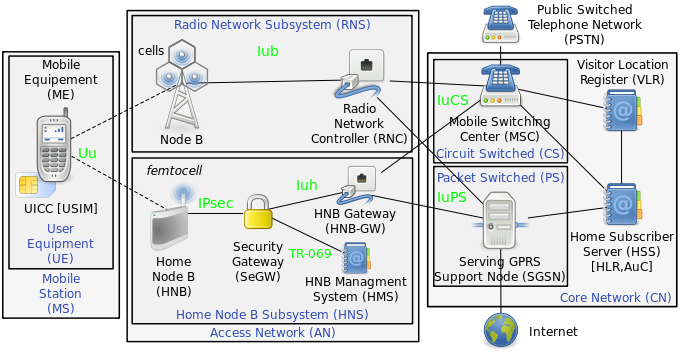
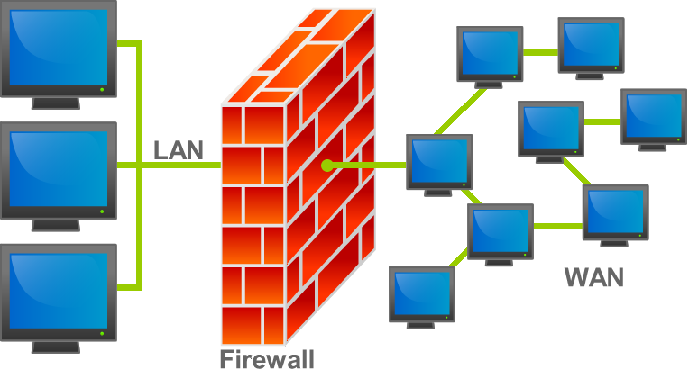
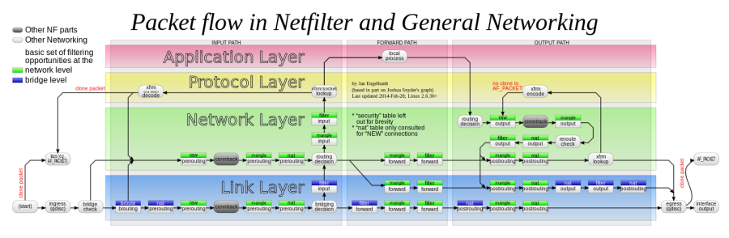
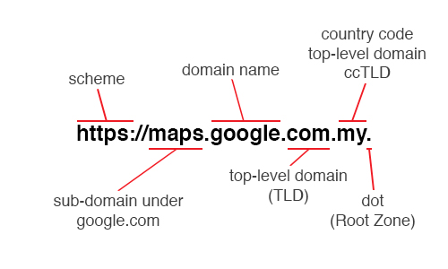
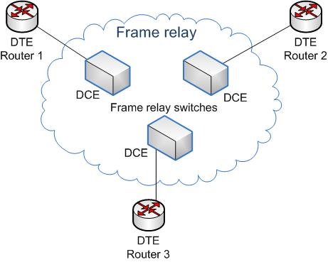
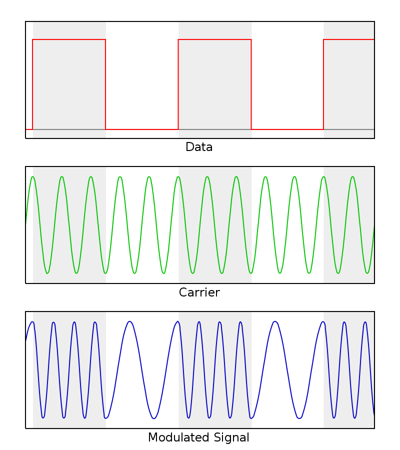
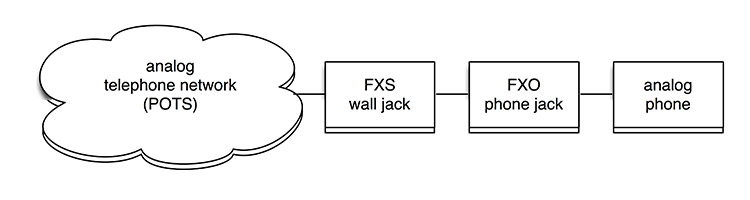

Facilitation |
|
A facilitator is a person who chooses or is given the explicit role of conducting a meeting. |
FCS |
Frame Check Sequence |
A frame check sequence (FCS) refers to the extra error-detecting code added to a frame in a communications protocol. Frames are used to send upper-layer data and ultimately the application data from a source to a destination.
The detection does not imply error recovery; for example, Ethernet specifies that a damaged frame should be discarded, but at the same time does not specify any action to cause the frame to be retransmitted. Other protocols, notably the Transmission Control Protocol (TCP), can notice the data loss and initiate error recovery. |
FDDI |
Fiber Distributed Data Interface |
Fiber Distributed Data Interface (FDDI) is a standard for data transmission in a local area network. It uses optical fiber as its standard underlying physical medium, although it was also later specified to use copper cable, in which case it may be called CDDI (Copper Distributed Data Interface), standardized as TP-PMD (Twisted-Pair Physical Medium-Dependent), also referred to as TP-DDI (Twisted-Pair Distributed Data Interface).
FDDI was effectively made obsolete in local networks by Fast Ethernet which offered the same 100 Mbit/s speeds, but at a much lower cost and, since 1998, by Gigabit Ethernet due to its speed, and even lower cost, and ubiquity. |
Feature |
|
Used in CxOne as an abstract measure or description of system functionality, i.e., the feature scope for a project.
Is also used to discuss a discrete piece of system behavior, e.g., "feature X". |
feature creep |
|
a tendency for product or project requirements to increase during development beyond those originally foreseen, leading to features that weren't originally planned and resulting risk to product quality or schedule. |
Feature Test |
|
Testing a specific subset of system functionality after construction of the functionality is completed. |
FemtoCell |
|
In telecommunications, a femtocell is a small, low-power cellular base station, typically designed for use in a home or small business. A broader term which is more widespread in the industry is small cell, with femtocell as a subset. It is also called femto AccessPoint (AP). It connects to the service provider's network via broadband (such as DSL or cable); current designs typically support four to eight simultaneously active mobile phones in a residential setting depending on version number and femtocell hardware, and eight to sixteen mobile phones in enterprise settings. A femtocell allows service providers to extend service coverage indoors or at the cell edge, especially where access would otherwise be limited or unavailable. Although much attention is focused on WCDMA, the concept is applicable to all standards, including GSM, CDMA2000, TD-SCDMA, WiMAX and LTE solutions.

|
FIPS |
|
Federal Information Processing Standards (FIPS) are publicly announced standards developed by the United States federal government for use in computer systems by non-military government agencies and government contractors.
FIPS standards are issued to establish requirements for various purposes such as ensuring computer security and interoperability, and are intended for cases in which suitable industry standards do not already exist. Many FIPS specifications are modified versions of standards used in the technical communities, such as the American National Standards Institute (ANSI), the Institute of Electrical and Electronics Engineers (IEEE), and the International Organization for Standardization (ISO). |
FIPS 140-2 |
|
The Federal Information Processing Standard (FIPS) Publication 140-2, (FIPS PUB 140-2), is a U.S. government computer security standard used to approve cryptographic modules. The title is Security Requirements for Cryptographic Modules. Initial publication was on May 25, 2001 and was last updated December 3, 2002
Purpose
The National Institute of Standards and Technology (NIST) issued the FIPS 140 Publication Series to coordinate the requirements and standards for cryptography modules that include both hardware and software components. Protection of a cryptographic module within a security system is necessary to maintain the confidentiality and integrity of the information protected by the module. This standard specifies the security requirements that will be satisfied by a cryptographic module. The standard provides four increasing, qualitative levels of security intended to cover a wide range of potential applications and environments. The security requirements cover areas related to the secure design and implementation of a cryptographic module. These areas include cryptographic module specification; cryptographic module ports and interfaces; roles, services, and authentication; finite state model; physical security; operational environment; cryptographic key management; electromagnetic interference/electromagnetic compatibility (EMI/EMC); self-tests; design assurance; and mitigation of other attacks.
Federal agencies and departments can validate that the module in use is covered by an existing FIPS 140-1 or FIPS 140-2 certificate that specifies the exact module name, hardware, software, firmware, and/or applet version numbers. The cryptographic modules are produced by the private sector or open source communities for use by the U.S. government and other regulated industries (such as financial and health-care institutions) that collect, store, transfer, share and disseminate sensitive but unclassified (SBU) information. A commercial cryptographic module is also commonly referred to as a hardware security module (HSM).
Security levels
FIPS 140-2 defines four levels of security, simply named "Level 1" to "Level 4". It does not specify in detail what level of security is required by any particular application.
Level 1
Security Level 1 provides the lowest level of security. Basic security requirements are specified for a cryptographic module (e.g., at least one Approved algorithm or Approved security function shall be used). No specific physical security mechanisms are required in a Security Level 1 cryptographic module beyond the basic requirement for production-grade components. An example of a Security Level 1 cryptographic module is a personal computer (PC) encryption board.
Level 2
Security Level 2 improves upon the physical security mechanisms of a Security Level 1 cryptographic module by requiring features that show evidence of tampering, including tamper-evident coatings or seals that must be broken to attain physical access to the plaintext cryptographic keys and critical security parameters (CSPs) within the module, or pick-resistant locks on covers or doors to protect against unauthorized physical access.
Level 3
In addition to the tamper-evident physical security mechanisms required at Security Level 2, Security Level 3 attempts to prevent the intruder from gaining access to CSPs held within the cryptographic module. Physical security mechanisms required at Security Level 3 are intended to have a high probability of detecting and responding to attempts at physical access, use or modification of the cryptographic module. The physical security mechanisms may include the use of strong enclosures and tamper-detection/response circuitry that zeroes all plaintext CSPs when the removable covers/doors of the cryptographic module are opened.
Level 4
Security Level 4 provides the highest level of security. At this security level, the physical security mechanisms provide a complete envelope of protection around the cryptographic module with the intent of detecting and responding to all unauthorized attempts at physical access. Penetration of the cryptographic module enclosure from any direction has a very high probability of being detected, resulting in the immediate deletion of all plaintext CSPs.
Security Level 4 cryptographic modules are useful for operation in physically unprotected environments. Security Level 4 also protects a cryptographic module against a security compromise due to environmental conditions or fluctuations outside of the module's normal operating ranges for voltage and temperature. Intentional excursions beyond the normal operating ranges may be used by an attacker to thwart a cryptographic module's defenses. A cryptographic module is required to either include special environmental protection features designed to detect fluctuations and delete CSPs, or to undergo rigorous environmental failure testing to provide a reasonable assurance that the module will not be affected by fluctuations outside of the normal operating range in a manner that can compromise the security of the module.
|
Firewall |
|
n computing, a firewall is a network security system that monitors and controls incoming and outgoing network traffic based on predetermined security rules. A firewall typically establishes a barrier between a trusted internal network and untrusted external network, such as the Internet.
Firewalls are often categorized as either network firewalls or host-based firewalls. Network firewalls filter traffic between two or more networks and run on network hardware. Host-based firewalls run on host computers and control network traffic in and out of those machines.


|
FNA |
Full Network Authentication |
This is where your line is assigned a NetworkID and the authentication is done on that. If the line connected matches the NetworkID records on the RADIUS servers it creates an auth session. |
|
|
Execution of testing using documented test cases. Compare to informal testing. |
Fortran |
|
Fortran is a general-purpose, compiled imperative programming language that is especially suited to numeric computation and scientific computing.
Originally developed by IBM in the 1950s for scientific and engineering applications, FORTRAN came to dominate this area of programming early on and has been in continuous use for over half a century in computationally intensive areas such as numerical weather prediction, finite element analysis, computational fluid dynamics, computational physics, crystallography and computational chemistry. It is a popular language for high-performance computing and is used for programs that benchmark and rank the world's fastest supercomputers.
Fortran encompasses a lineage of versions, each of which evolved to add extensions to the language while usually retaining compatibility with prior versions. Successive versions have added support for structured programming and processing of character-based data (FORTRAN 77), array programming, modular programming and generic programming (Fortran 90), high performance Fortran (Fortran 95), object-oriented programming (Fortran 2003) and concurrent programming (Fortran 2008).
Fortran's design was the basis for many other programming languages. Among the better known is BASIC, which is a based on FORTRAN II with a number of syntax cleanups, notably better logical structures, and other changes to more easily work in an interactive environment. |
Forwarding plane |
|
See User Plane |
FQDN |
Fully Qualified Domain Name |
A fully qualified domain name (FQDN), sometimes also referred to as an absolute domain name, is a domain name that specifies its exact location in the tree hierarchy of the Domain Name System (DNS). It specifies all domain levels, including at least a second-level domain and a top-level domain. A fully qualified domain name is distinguished by its lack of ambiguity: it can be interpreted only in one way.
The DNS root domain is unnamed which is expressed by having an empty label in the DNS hierarchy, resulting in a fully qualified domain name ending with the top-level domain. However, in some cases the full stop (period) character is required at the end of the fully qualified domain name.
In contrast to a domain name that is fully specified, a domain name that does not include the full path of labels up to the DNS root is often called a partially qualified domain name.

|
Frame Relay |
|
Frame Relay is a standardized wide area network technology that specifies the physical and data link layers of digital telecommunications channels using a packet switching methodology. Originally designed for transport across Integrated Services Digital Network (ISDN) infrastructure, it may be used today in the context of many other network interfaces.
Network providers commonly implement Frame Relay for voice (VoFR) and data as an encapsulation technique used between local area networks (LANs) over a wide area network (WAN). Each end-user gets a private line (or leased line) to a Frame Relay node. The Frame Relay network handles the transmission over a frequently changing path transparent to all end-user extensively used WAN protocols. It is less expensive than leased lines and that is one reason for its popularity. The extreme simplicity of configuring user equipment in a Frame Relay network offers another reason for Frame Relay's popularity.

|
Frequent Releases |
|
An Agile team frequently releases its product into the hands of end users, listening to feedback, whether critical or appreciative. |
Frequently Asked Question |
FAQ |
Documents commonly asked questions and their answers. |
FSK |
|
Frequency-shift keying (FSK) is a frequency modulation scheme in which digital information is transmitted through discrete frequency changes of a carrier signal. The technology is used for communication systems such as amateur radio, caller ID and emergency broadcasts. The simplest FSK is binary FSK (BFSK). BFSK uses a pair of discrete frequencies to transmit binary (0s and 1s) information. With this scheme, the "1" is called the mark frequency and the "0" is called the space frequency.

|
FTP |
File Transfer Protocol |
The File Transfer Protocol (FTP) is a standard network protocol used for the transfer of computer files between a client and server on a computer network.
FTP is built on a client-server model architecture and uses separate control and data connections between the client and the server. |
FTPS |
File Transfer Protocol Secure |
FTPS (also known as FTPES, FTP-SSL, and FTP Secure) is an extension to the commonly used File Transfer Protocol (FTP) that adds support for the Transport Layer Security (TLS) and the Secure Sockets Layer (SSL) cryptographic protocols.
FTPS should not be confused with the SSH File Transfer Protocol (SFTP), a secure file transfer subsystem for the Secure Shell (SSH) protocol it is not compatible with. It is also different from FTP over SSH, the practice of tunneling FTP through an SSH connection. |
Full duplex |
|
In a full-duplex system, both parties can communicate with each other simultaneously. An example of a full-duplex device is a telephone; the parties at both ends of a call can speak and be heard by the other party simultaneously. The earphone reproduces the speech of the remote party as the microphone transmits the speech of the local party, because there is a two-way communication channel between them, or more strictly speaking, because there are two communication channels between them. |
Function Point |
|
Size measure for a software system based on abstracted measure of system functionality. |
Functional Requirement |
|
Functionality that must be built into the system to satisfy the business requirements. Also known as a what requirement. |
Functional Testing |
|
Comparing a system's behavior against expected behavior, without concern for the internal workings of the system. |
Fuzzy Front End |
|
Term coined by Steve McConnell to describes the initial inception phases of a project. CxOne defines the start of the fuzzy front end as the point someone starts thinking about a project and working on chartering it, and the end as the point at which the charter is approved and the project begins. |
Fuzzy Logic |
|
A relative ranking technique for describing characteristics. Often used in conjunction with items that contain uncertainty, like estimates. A general example is to take three buckets called small, medium, and large. Items are assigned t each bucket, and then the bucket values are used as stand-ins for a possible range of quantitative values. One common characteristic of fuzzy logic buckets is that the high end value from one bucket overlaps the low end value of the next bucket. |
FXO |
Foreign Exchange Office |
FXS (Foreign Exchange Station) means the wall jack or the interface to the telephone system which FXO devices can be connected to. Using these interfaces a call can be established. The port provides the necessary electricity as well as the dialtone and the call signal.

|
FXS |
Foreign Exchange Station |
FXO (Foreign Exchange Office) is the port that receives the analog line on the telephone or fax machine. It establishes the connection to the analog line (FXS). FXS devices connected to phone system are referred to as endpoints (e.g. a phone).
|
{kind=link}
{kind=link}
{kind=link}
{kind=link}
{kind=link}
{kind=link}
{kind=link}